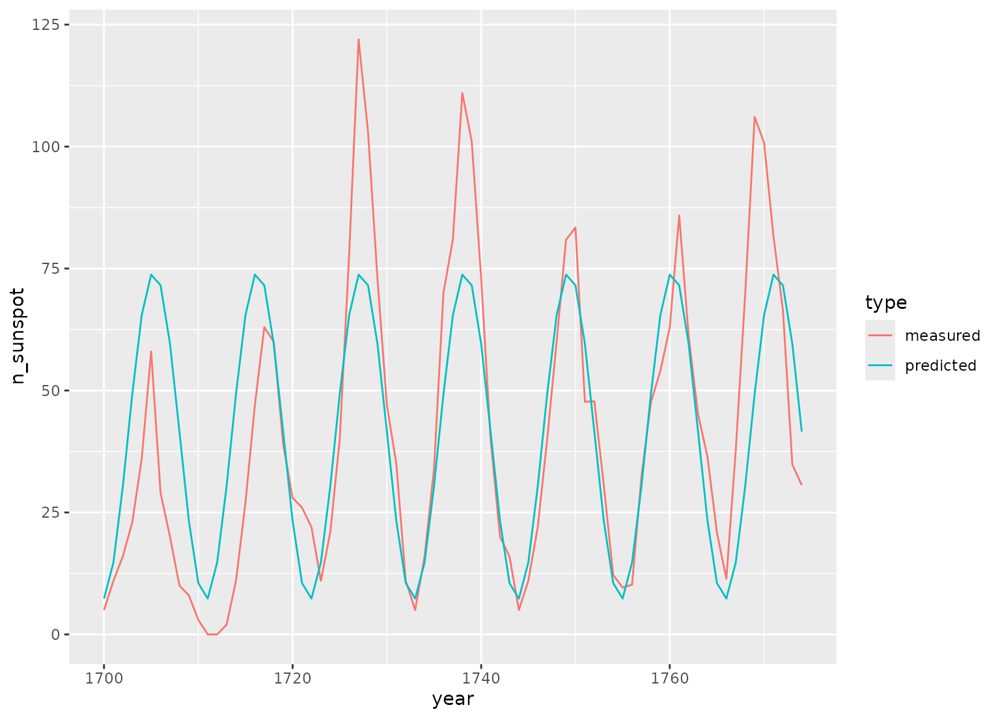

step_harmonic creates a specification of a recipe step that
will add sin and cos terms for harmonic analysis.
Usage
step_harmonic(
recipe,
...,
role = "predictor",
trained = FALSE,
frequency = NA_real_,
cycle_size = NA_real_,
starting_val = NA_real_,
keep_original_cols = FALSE,
columns = NULL,
skip = FALSE,
id = rand_id("harmonic")
)Arguments
- recipe
A recipe object. The step will be added to the sequence of operations for this recipe.
- ...
One or more selector functions to choose variables for this step. See
selections()for more details. This will typically be a single variable.- role
For model terms created by this step, what analysis role should they be assigned? By default, the new columns created by this step from the original variables will be used as predictors in a model.
- trained
A logical to indicate if the quantities for preprocessing have been estimated.
- frequency
A numeric vector with at least one value. The value(s) must be greater than zero and finite.
- cycle_size
A numeric vector with at least one value that indicates the size of a single cycle.
cycle_sizeshould have the same units as the input variable(s).- starting_val
either
NA, numeric, Date or POSIXt value(s) that indicates the reference point for the sin and cos curves for each input variable. If the value is aDateorPOISXtthe value is converted to numeric usingas.numeric. This parameter may be specified to increase control over the signal phase. Ifstarting_valis not specified the default is 0.- keep_original_cols
A logical to keep the original variables in the output. Defaults to
FALSE.- columns
A character string of variable names that will be populated elsewhere.
- skip
A logical. Should the step be skipped when the recipe is baked by
bake()? While all operations are baked whenprep()is run, some operations may not be able to be conducted on new data (e.g. processing the outcome variable(s)). Care should be taken when usingskip = TRUEas it may affect the computations for subsequent operations.- id
A character string that is unique to this step to identify it.
Value
An updated version of recipe with the new step added to the
sequence of any existing operations.
Details
This step seeks to describe periodic components of observational data using a combination of sin and cos waves. To do this, each wave of a specified frequency is modeled using one sin and one cos term. The two terms for each frequency can then be used to estimate the amplitude and phase shift of a periodic signal in observational data. The equation relating cos waves of known frequency but unknown phase and amplitude to a sum of sin and cos terms is below:
$$A_j cos(\sigma_j t_i - \Phi_j) = C_j cos(\sigma_j t_i) + S_j sin(\sigma_j t_i)$$
Solving the equation yields \(C_j\) and \(S_j\). the amplitude can then be obtained with:
$$A_j = \sqrt{C^2_j + S^2_j}$$
And the phase can be obtained with: $$\Phi_j = \arctan{(S_j / C_j)}$$
where:
\(\sigma_j = 2 \pi (frequency / cycle\_size))\)
\(A_j\) is the amplitude of the \(j^{th}\) frequency
\(\Phi_j\) is the phase of the \(j^{th}\) frequency
\(C_j\) is the coefficient of the cos term for the \(j^{th}\) frequency
\(S_j\) is the coefficient of the sin term for the \(j^{th}\) frequency
The periodic component is specified by frequency and cycle_size
parameters. The cycle size relates the specified frequency to the
input column(s) units. There are multiple ways to specify a wave of given
frequency, for example, a POSIXct input column given a frequency of
24 and a cycle_size equal to 86400 is equivalent to a frequency of
1.0 with cycle_size equal to 3600.
References
Doran, H. E., & Quilkey, J. J. (1972). Harmonic analysis of seasonal data: some important properties. American Journal of Agricultural Economics, 54, volume 4, part 1, 646-651.
Foreman, M. G. G., & Henry, R. F. (1989). The harmonic analysis of tidal model time series. Advances in water resources, 12(3), 109-120.
See also
Other individual transformation steps:
step_BoxCox(),
step_YeoJohnson(),
step_bs(),
step_hyperbolic(),
step_inverse(),
step_invlogit(),
step_logit(),
step_log(),
step_mutate(),
step_ns(),
step_percentile(),
step_poly(),
step_relu(),
step_sqrt()
Examples
library(ggplot2, quietly = TRUE)
library(dplyr)
data(sunspot.year)
sunspots <-
tibble(
year = 1700:1988,
n_sunspot = sunspot.year,
type = "measured"
) %>%
slice(1:75)
# sunspots period is around 11 years, sample spacing is one year
dat <- recipe(n_sunspot ~ year, data = sunspots) %>%
step_harmonic(year, frequency = 1 / 11, cycle_size = 1) %>%
prep() %>%
bake(new_data = NULL)
fit <- lm(n_sunspot ~ year_sin_1 + year_cos_1, data = dat)
preds <- tibble(
year = sunspots$year,
n_sunspot = fit$fitted.values,
type = "predicted"
)
bind_rows(sunspots, preds) %>%
ggplot(aes(x = year, y = n_sunspot, color = type)) +
geom_line()

# ------------------------------------------------------------------------------
# POSIXct example
date_time <-
as.POSIXct(
paste0(rep(1959:1997, each = 12), "-", rep(1:12, length(1959:1997)), "-01"),
tz = "UTC"
)
carbon_dioxide <- tibble(
date_time = date_time,
co2 = as.numeric(co2),
type = "measured"
)
# yearly co2 fluctuations
dat <-
recipe(co2 ~ date_time,
data = carbon_dioxide
) %>%
step_mutate(date_time_num = as.numeric(date_time)) %>%
step_ns(date_time_num, deg_free = 3) %>%
step_harmonic(date_time, frequency = 1, cycle_size = 86400 * 365.24) %>%
prep() %>%
bake(new_data = NULL)
fit <- lm(co2 ~ date_time_num_ns_1 + date_time_num_ns_2 +
date_time_num_ns_3 + date_time_sin_1 +
date_time_cos_1, data = dat)
preds <- tibble(
date_time = date_time,
co2 = fit$fitted.values,
type = "predicted"
)
bind_rows(carbon_dioxide, preds) %>%
ggplot(aes(x = date_time, y = co2, color = type)) +
geom_line()